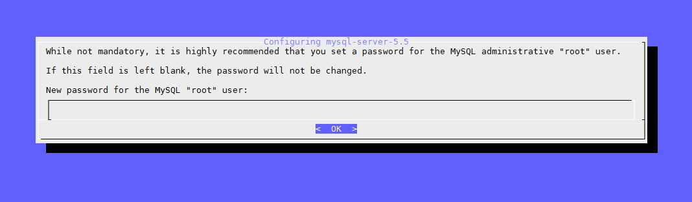

Cài đặt MySQL trên Ubuntu
Hãy gõ lệnh dưới đây để cài đặt MySQL Server và module MySQL cho PHP.
sudo apt-get install mysql-server
Trong khi cài đặt, MySQL sẽ hiển thị một giao diện để bạn thiết lập mật khẩu root cho MySQL.

Cài xong, hãy kích hoạt nó bằng lệnh sau:
mysql_install_db
Sau đó chạy thêm lệnh này để cài đặt bảo mật cho MySQL Server và có thể đổi lại mật khẩu root.
/usr/bin/mysql_secure_installation
Sử dụng dịch vụ
sudo systemctl status mysql